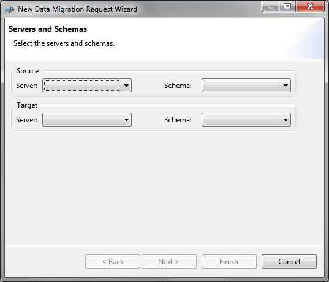
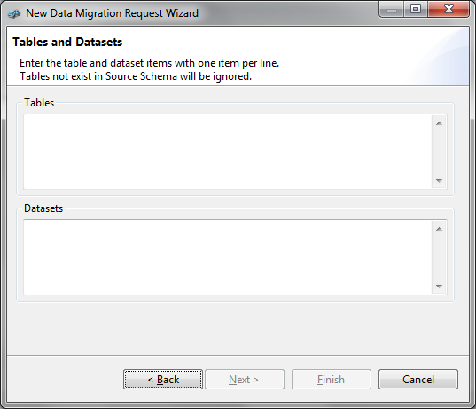
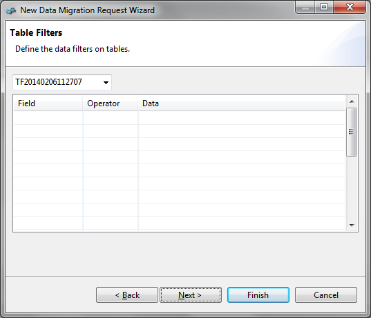
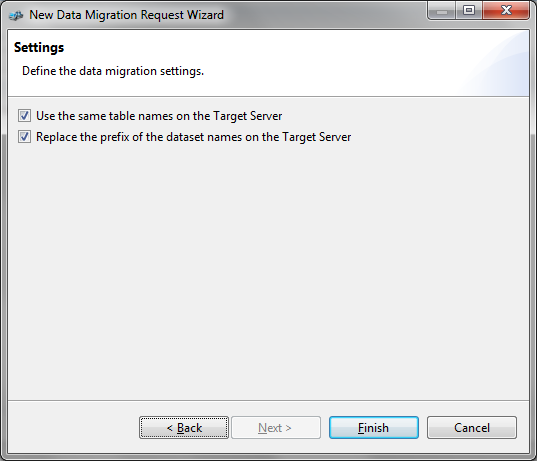
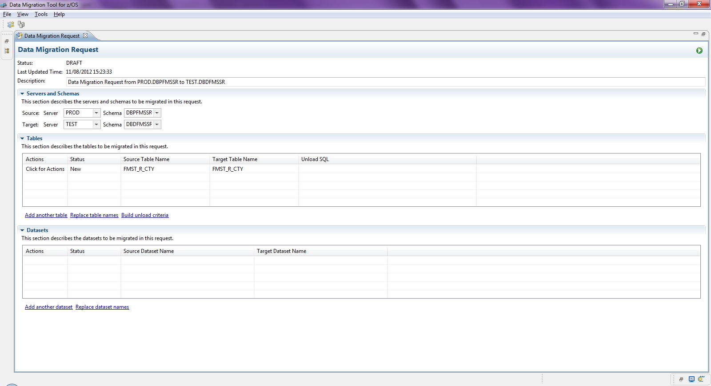
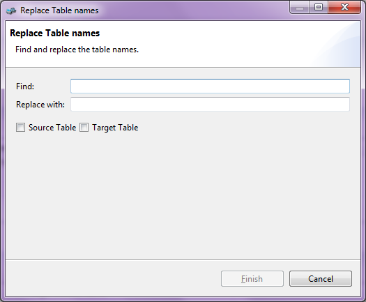
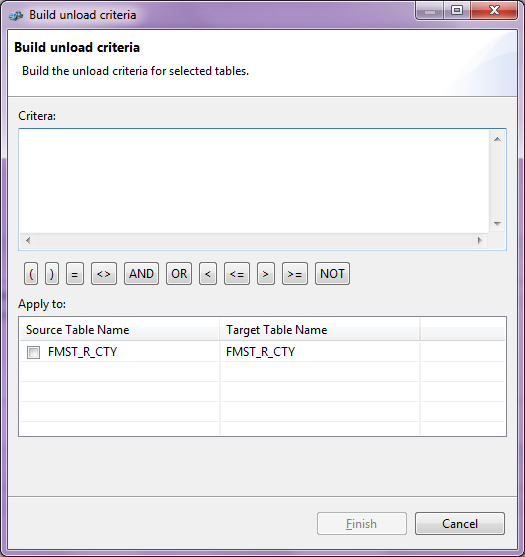

Select the menu File -> New Data Migration Request or the icon on the toolbar to start a data migration request. The New Data Migration Request Wizard will be then presented.
Note: The schema will be automatically selected if the server has only one schema defined in the tool.

After selected the servers and schemas, the migration items can be entered. Both table and dataset names can be entered here, with one item per line.
Note: At least one item has to been entered.

After entered table/dataset names, the table filters can be defined to migrate the required records only.

In the last step, there are options to be selected to finalize the request.

Finally, the data migration request is generated.

Note: The servers, schemas, and items are all editable on the data migration request editor.
The table and dataset names can be replaced to match the server/schema naming convention by clicking the link Replace table/dataset names.

The table unload criteria can be built by clicking the link Build unload criteria. Multiple tables can be applied with the same criteria.

The unload criteria can be used directly as the unload SQL of each table. The unload SQL can be in one of the formats of the following.
When everything is ready, click the Run button on the top-right to start the data migration.